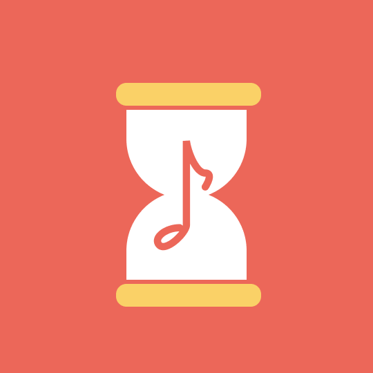
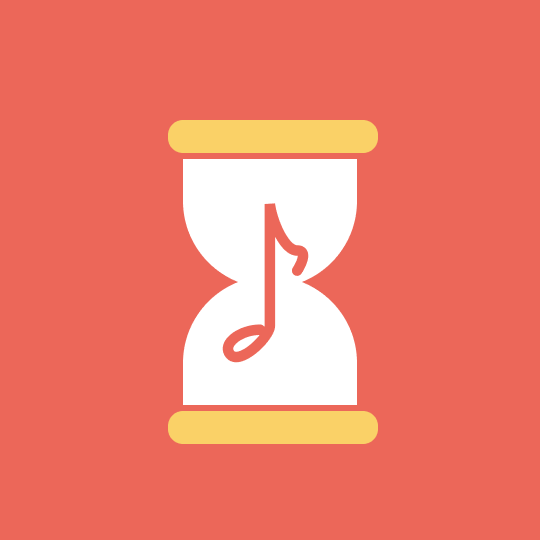

 Tune-in-Timer
Mobile App UI/UX Design
Timer meets Spotify! Innovated and designed UI/UX for Tune-in Timer, a mobile timer utility app that has a music streaming function.

 Tune-in-Timer
Mobile App UI/UX Design
Timer meets Spotify! Innovated and designed UI/UX for Tune-in Timer, a mobile timer utility app that has a music streaming function.
Stay track on time while listening to your favorite songs! Tune-in-timer is a mobile timer app that countdowns time with a music playlist. Set time, select songs, and tune-in to every second of your life!
Set Time & Choose Music
Set time, choose genre, and start the countdown playlist. Click shuffle button to shuffle the playlist.
Start Timer & Play Music